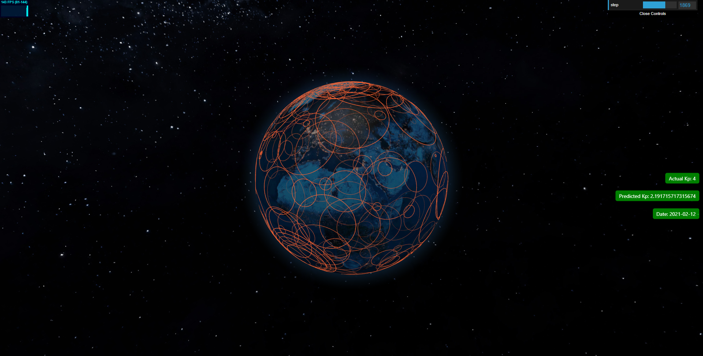
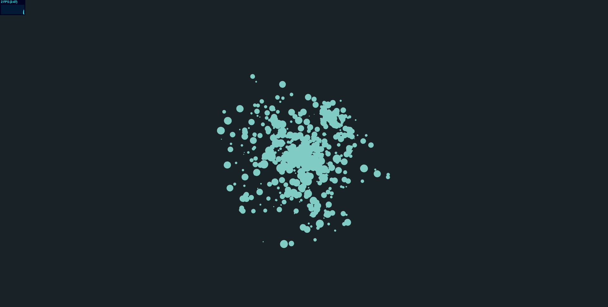
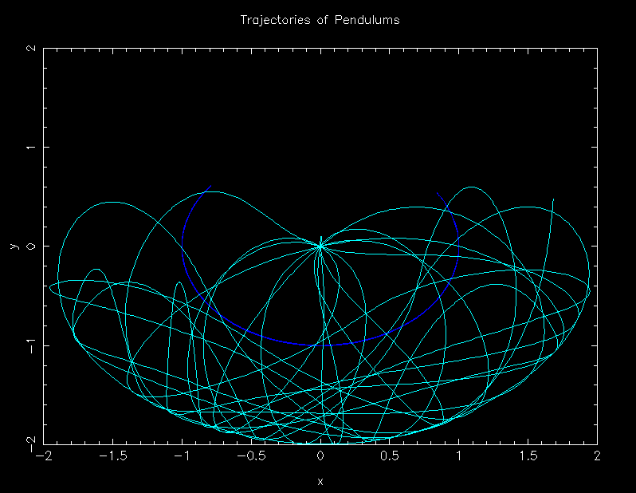

projects.

Project Pythia: Kp Index Prediction
A machine learning approach to predicting Kp index values from DSCOVR satellite spectral data, paired with a ThreeJS visualization of the data with an interactive globe component. Project was selected to represent Hamilton as a global nominee in the Nasa Space Apps Challenge.

3D N-Body Simulation
Web-based 3D N-Body simulation using ThreeJS and React.

Double Pendulum Numerical Solver
Numerical solver for a double pendulum system with a tracjetory plot visualization of motion data.

JadeLang Virtual Machine
A stack-based virtual machine for the bytecode execution of a syntantically unique programming language.